Imagine a whale shark approaching a dense cluster of krill. To capture the most krill in a single pass, you would align yourself with the direction of greatest spread in the krill cloud: the axis along which krill are most dispersed.
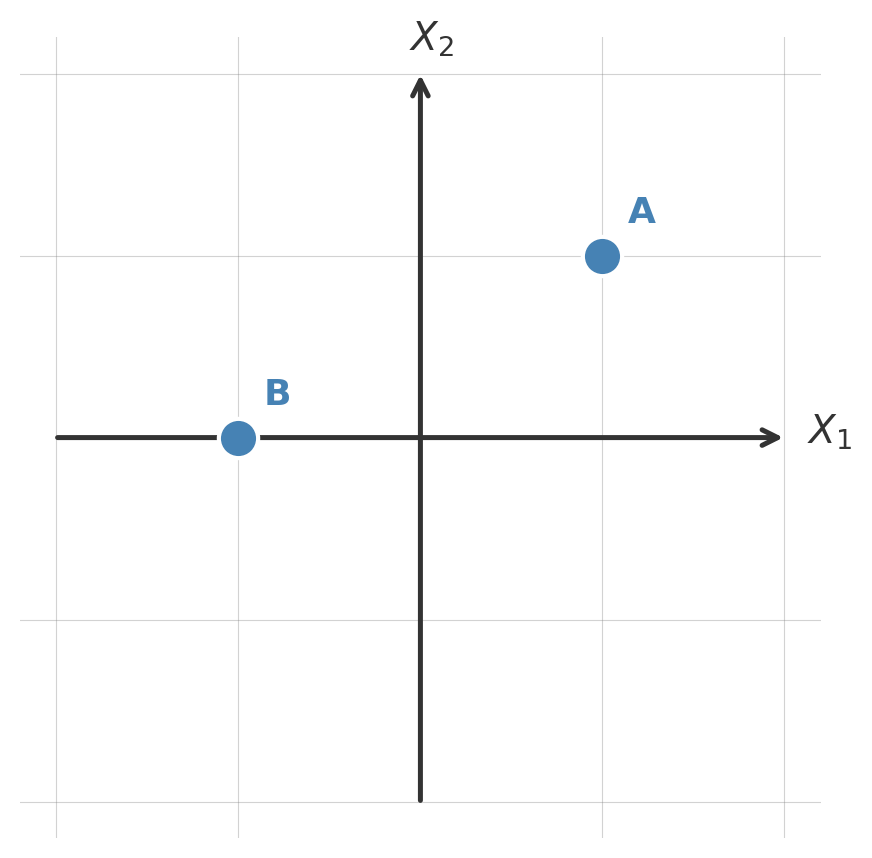
EDS 232
Lesson 7
Principal Component Analysis
In this lesson
Motivation
To capture the most krill in a single pass, how would you align yourself?
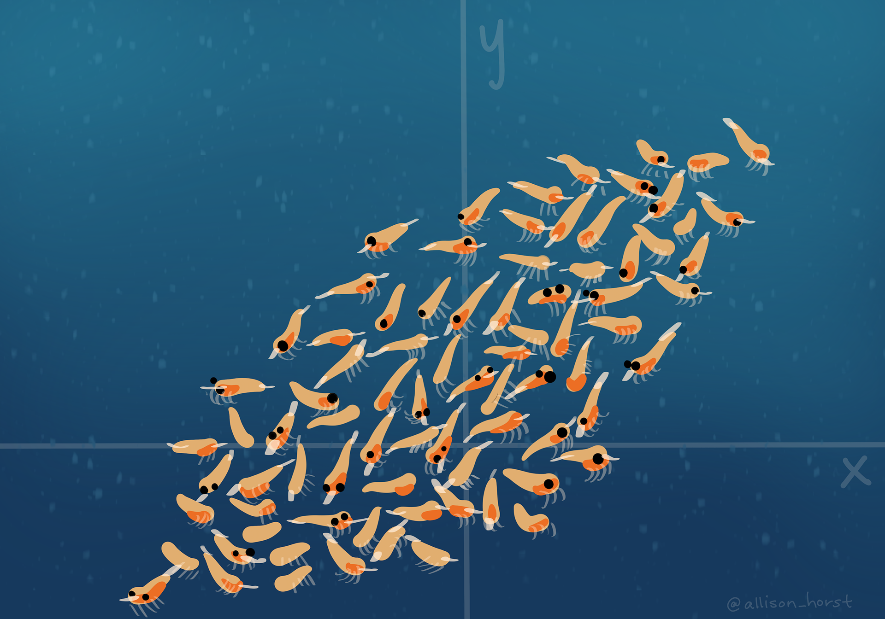
Imagine a whale shark approaching a dense cluster of krill. To capture the most krill in a single pass, you would align yourself with the direction of greatest spread in the krill cloud: the axis along which krill are most dispersed.
The core idea
The same intuition applies to data. When we have many correlated predictors, some directions capture a great deal of the variation while others capture very little.
Principal Component Analysis (PCA) finds those directions of greatest variation automatically.
With many predictor variables, PCA simplifies our view of the coordinate system to capture as much about the data as possible in as few dimensions as possible.
Axes, coordinates, and projections
Original coordinate system

We are in control of which axes we use to represent our data.
Starting with the usual axes \(X_1\) and \(X_2\), our two points have coordinates:
| Point | Coords in \(X_1, X_2\) |
|---|---|
| A | (1, 1) |
| B | (−1, 0) |
A new coordinate system
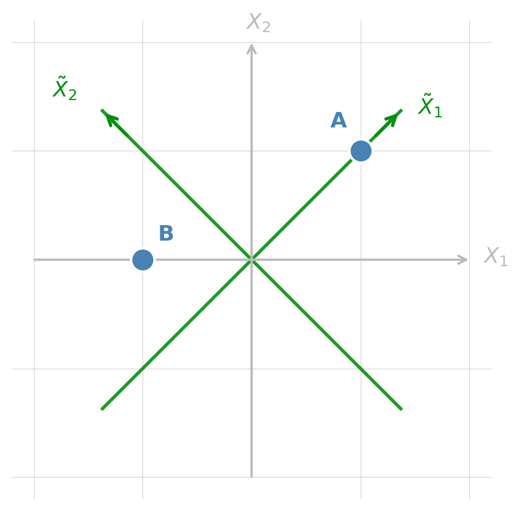
Using a different set of axes \(\tilde{X}_1\) and \(\tilde{X}_2\) (rotated 45°), the same points get new coordinates:
| Point | Coords in \(X_1, X_2\) | Coords in \(\tilde{X}_1, \tilde{X}_2\) |
|---|---|---|
| A | (1, 1) | (\(\sqrt{2}\), 0) |
| B | (−1, 0) | (−0.71, 0.71) |
Same points, just different ways of representing them.
Projecting onto an axis
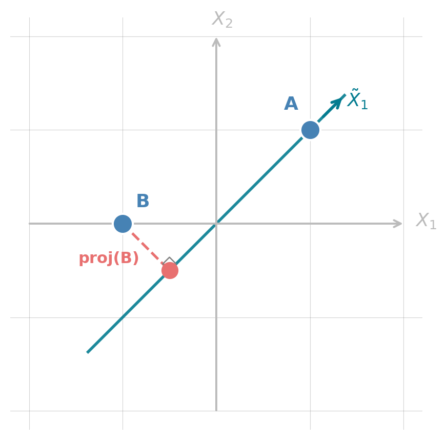
Projecting onto a coordinate axis means keeping only the coordinate along that axis and dropping the rest.
Projecting A and B onto \(\tilde{X}_1\):
| Point | Projection onto \(\tilde{X}_1\) |
|---|---|
| A | proj(A) \(= \sqrt{2}\) |
| B | proj(B) \(= -0.71\) |
The dashed red line shows the perpendicular drop from B to its projection on \(\tilde{X}_1\).
We will use the idea of changing axes and projecting throughout.
Principal components
What are principal components?
Principal Component Analysis (PCA) creates a new set of axes/coordinates so that:
There are always as many PCs as original variables.
If PC1 and PC2 explain most of the variance, we’d still see most of the important structure in our data using just those two.
This is the core idea of dimensionality reduction: converting complex multivariate data into fewer dimensions while retaining as much information as possible.
A 3D example: 600 pts from three correlated variables \(x\)/\(y\)/\(z\)
Most of the variation is concentrated along a single dominant axis — the data cloud is very elongated.
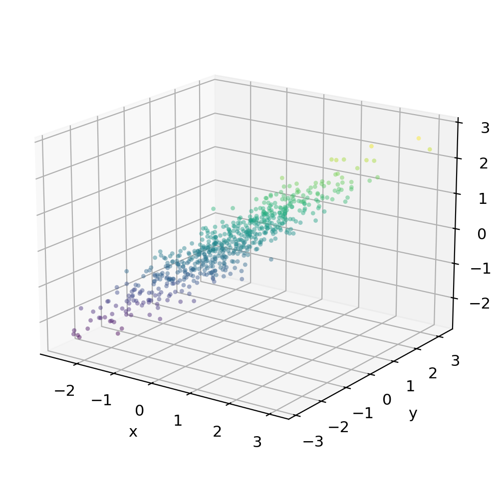
Check-in

Recall that PC1 will be an axis in the direction of maximum variance in the data. PC2 will be the direction of maximum remaining variance, orthogonal to PC1.
Where would you place PC1? What about PC2?
Identifying principal components
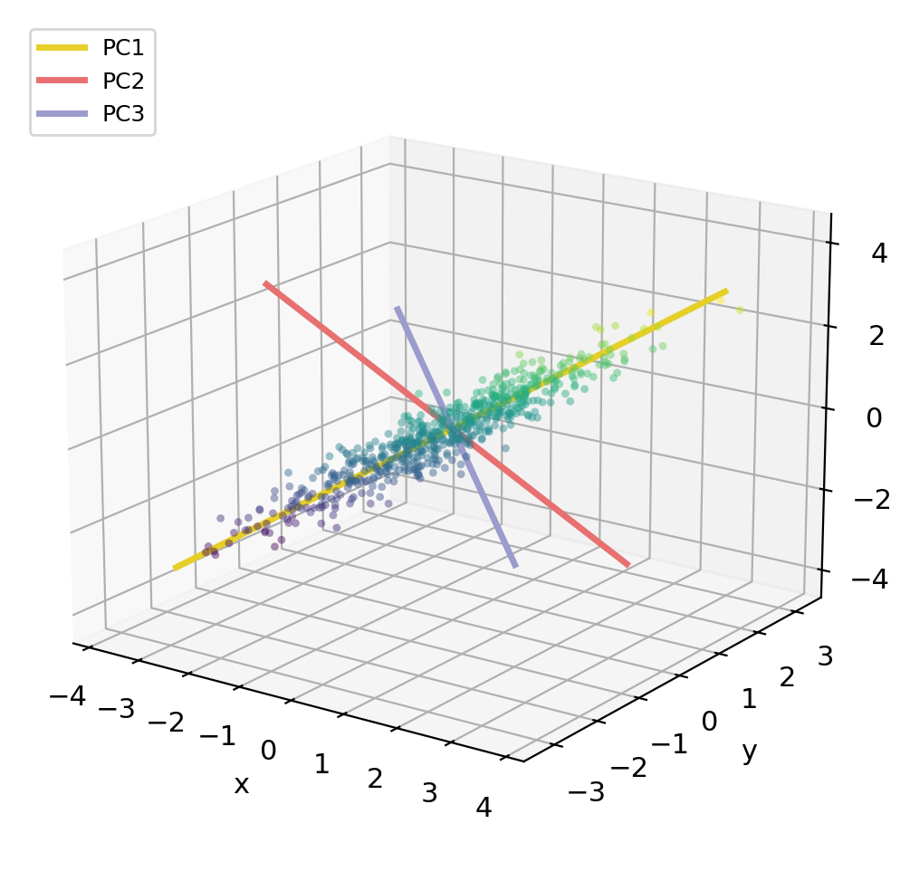
PCA gives us a new coordinate system
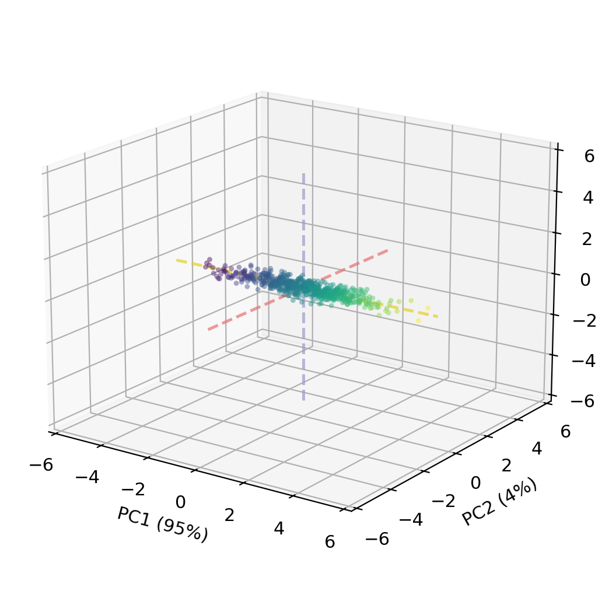
If we re-express every data point in PC coordinates (PC scores instead of \(x/y/z\)), the data cloud becomes axis-aligned.
Each data point \((x, y, z)\) gets a new coordinate — its scores — in the PC coordinate system.
Projecting to 2D: keeping PC1 + PC2
Because PC1 alone captures 95 % of the variance, dropping PC3 (which contains only 1.1 % of the variance) loses very little information:
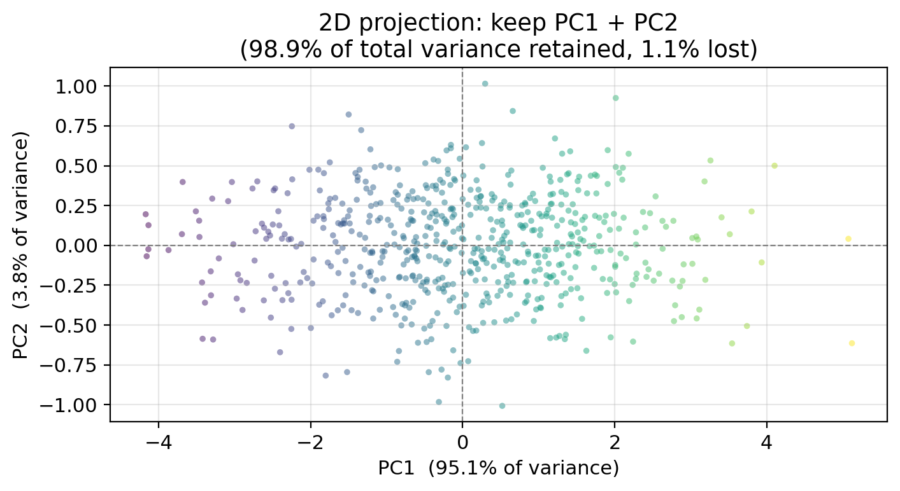
By projecting onto PC1 + PC2, we go from 3 dimensions to 2 while retaining 98.9 % of the total variance.
Proportion of variance explained
Proportion of variance explained (PVE)
Every PC captures a certain share of the total variance: this is its proportion of variance explained (PVE).
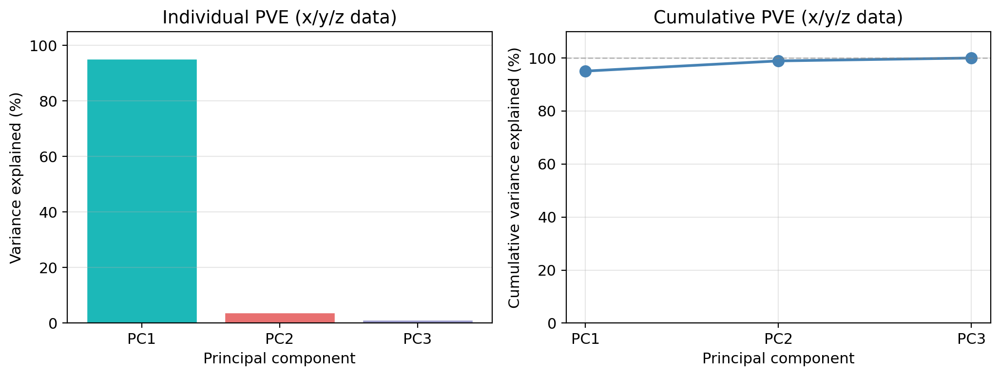
PC1 alone captures 95.1 % of all variance.
How many components do we keep?

In this example: PC1 + PC2 together retain 98.9 %, so the 2D projection preserved the data structure well. We could have projected only onto PC1 too!
Principal Component Regression
Principal Component Regression
So far, PCA has been applied to the predictors only: we have not used the response variable \(Y\).
Principal Component Regression (PCR) connects the predictors and their PCs to the response:
Replace the original \(p\) predictors with \(M \leq p\) principal components, then fit OLS on the projected data.
The guiding assumption: the directions in which the predictors vary the most are often also the directions most strongly associated with the response.
Reasonable one in many real settings.
PCR: 3D example setup
Using our 3D \(x/y/z\) data, suppose we observe a response \(Y\). We generate it with the following formula:
\[Y = 2x + 2y + 2z + \varepsilon\]
So the true coefficients are 2 for all three predictors.
If we model \(Y\) using three predictors \(x\)/\(y\)/\(z\) and a standard MLR fit by OLS then, our model is:
\[\hat{Y} = \hat{\beta}_0 + \hat{\beta}_x \cdot x + \hat{\beta}_y \cdot y + \hat{\beta}_z \cdot z\]
and we get the coefficient estimates:
Predictor OLS coefficient
x 2.039
y 1.884
z 2.127
OLS intercept: -0.072 | OLS R²: 0.944PCR with M = 1 component
Since PC1 captures 95.1 % of the variance in \(x\), \(y\), \(z\), we can try replacing all three variables with just PC1.
Instead of three predictors, we fit a simple linear regression on PC1:
\[\hat{Y} = \hat{\alpha}_0 + \hat{\alpha}_1 \cdot \text{PC1}.\]
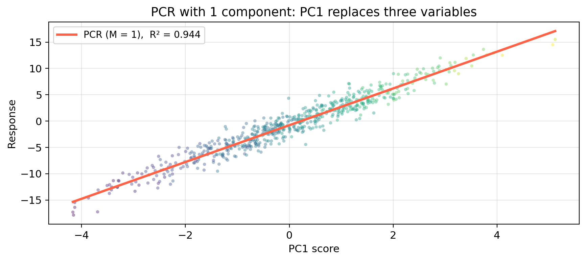
OLS vs PCR: train and test performance
Model Parameters Train R² Test MSE
OLS (3 predictors: x, y, z) 3 0.944 2.112
PCR (M = 1 component) 1 0.944 2.095
PCR (M = 2 components) 2 0.944 2.110What do these results tell you about where most of the predictive signal from this data is coming from?
Here PCR with just 1 component achieves nearly the same test MSE as OLS. This confirmis that almost all predictive signal lives in PC1!
General setup
PCR: general setup
We apply PCR in the context of multiple linear regression with \(p\) predictors \(X_1, \ldots, X_p\) and a response \(Y\):
\[Y = \hat{\beta}_0 + \hat{\beta}_1 X_1 + \cdots + \hat{\beta}_p X_p.\]
PCR works in four steps:
The key tuning parameter is \(M\):
Exercise: meadow plant diversity
Meadow plant diversity dataset
We apply PCA and PCR to the dataset from the previous lesson:
precip, temp, forest_cover, soil_N, elevation, slope, aspect, canopyspecies_richness (plant species per 25 m² plot)Data overview

True model: only precip, temp, forest_cover, soil_N, elevation, slope have non-zero coefficients
aspect and canopy are pure noise
Check-in
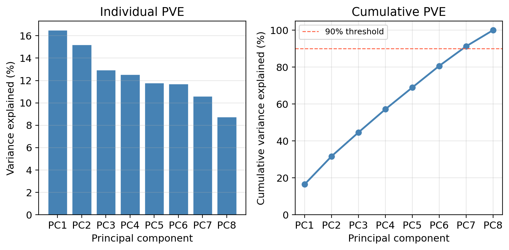
Explain to the person you are working with:
how each of the PCs is computed and
what is being depicted on each of the plots.
Check-in

Looking at the scree plot:
How many components are needed to explain at least 90% of the total variance in the 8 predictors?
Check-in

Looking at the scree plot:
How many components are needed to explain at least 90% of the total variance in the 8 predictors?
Seven components are needed to reach 90% cumulative PVE.
In this example the 8 predictors were generated independently, no single dominant direction captures most of the variance. The PVE is spread fairly evenly across components.
Check-in
The figure below shows the 10-fold CV-MSE for each value of \(M\) from 1 to 8.

Explain to the person you are working with:
Why are we interested in selecting only a few of the principal components?
How is CV used to select the optimal number of components?
Check-in
The figure below shows the 10-fold CV-MSE for each value of \(M\) from 1 to 8.
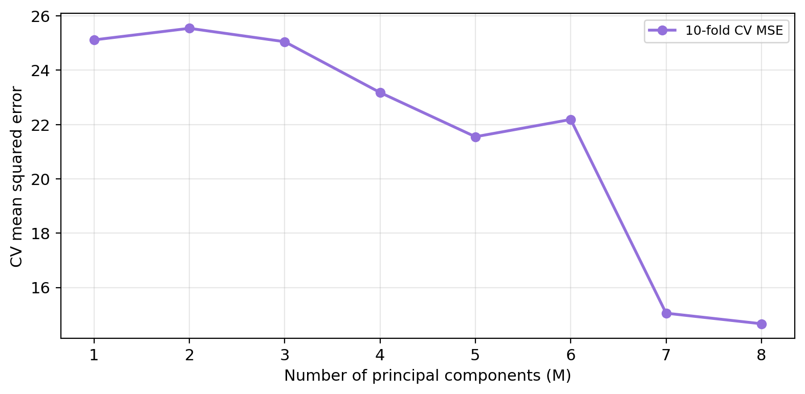
What is the optimal number of components selected by cross-validation?
How does this number of components relate with the OLS regression?
Check-in
The figure below shows the 10-fold CV-MSE for each value of \(M\) from 1 to 8.
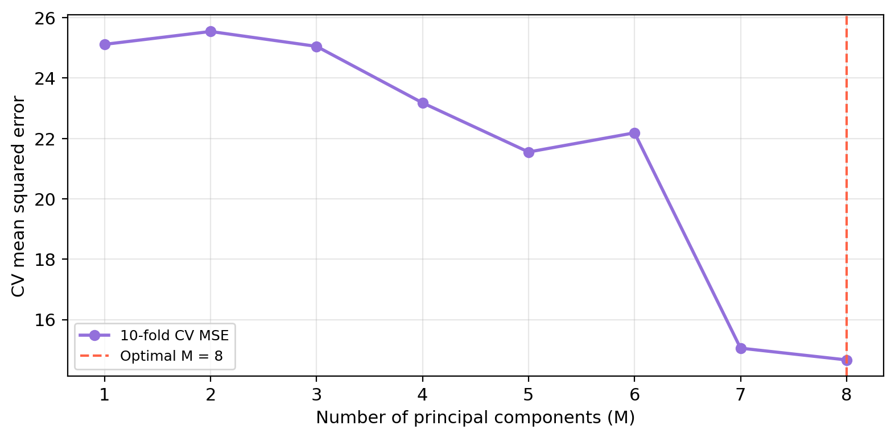
What is the optimal number of components selected by cross-validation?
How does this number of components relate with the OLS regression?
The optimal \(M\) is 8 — retaining 8 component(s) gives the best out-of-sample prediction accuracy.
PCR at \(M = p\) (number of predictors) is identical to OLS, and their CV-MSEs are equal.
Check-in: comparing PCR, ridge, and lasso
Method CV-MSE
OLS (all 8 predictors) 14.664
PCR (M = 8) 14.664
Ridge (CV-optimal λ) 14.628
Lasso (CV-optimal λ) 14.496Check-in: comparing PCR, ridge, and lasso
Method CV-MSE
OLS (all 8 predictors) 14.664
PCR (M = 8) 14.664
Ridge (CV-optimal λ) 14.628
Lasso (CV-optimal λ) 14.496Lasso tends to perform best because it can exactly zero out the two truly irrelevant predictors (aspect and canopy), directly matching the structure of the true model.
PCR cannot perform variable selection and lasso can. PCR is still taking into account all variables when forming linear combinations of the predictors to create the principal components. PCR works best when the signal is spread across many predictors that may have correlation across them.